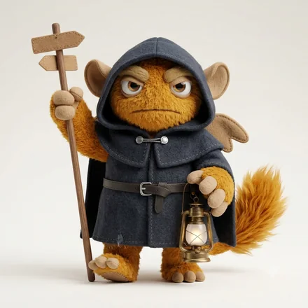

monster type
ISFJ-O-C内に抱えるお世話モンスター
気づかれないところで、支えを差し出す人
モンスター名は、6軸の組み合わせにつけた分類名です。軸ごとの表現ではありません。
ISFJ-O-C とは
ISFJ-O-C（ISFJ-OC／ISFJ OC とも書かれます）は、64タイプ性格診断のうちの1つです。ISFJの4文字に、自分への確信を表すO（揺らぎ）と、人への構えを表すC（慎重）が重なります。64モンスターズでは「内に抱えるお世話モンスター」と呼んでいます。
この ISFJ という4文字は、64モンスターズ独自の設問と採点による結果を表すものです。ほかの性格検査による判定を示すものではありません。コードの読み方
相手が困る前に手当てをしておく、静かな献身のタイプです。記憶が細かく、人の好みや事情をよく覚えています。頼まれると断りにくく、負担が偏りやすいのが弱点です。
人の事情も自分の不安も、全部ひとりで抱えていくタイプ。自分の判断を疑いながら、相談する相手は慎重に選ぶので、外からは何も起きていないように見えます。実際には、誰にも渡していない荷物が静かに積み上がっています。
ISFJ-O-C はこんな人
実在の人物ではなく、よく見かける役割と場面で書いています。
- 人の事情も自分の不安も、全部ひとりで抱えていく人
- 外からは、何も起きていないように見える人
- 誰にも渡していない荷物が、静かに積み上がっている人
ISFJ-O-C あるある
- 限界が誰にも見えないまま、ある日止まる
- 相談する相手を、慎重に選びすぎて選べない
- 自分の判断を疑いながら、それも人には言わない
- 何かあったのかと聞かれて、何もないと答える
- 人の荷物は預かるのに、自分の荷物は渡さない
当たっているかどうかは、実際に受けてみるのがいちばん早いです。
全部が当たるとは限りません。6軸の組み合わせから見た傾向です。
4つのサブタイプの中での位置
 ISFJ-A-H迷わず手を貸すお世話モンスター
ISFJ-A-H迷わず手を貸すお世話モンスター ISFJ-A-C見守るお世話モンスター
ISFJ-A-C見守るお世話モンスター ISFJ-O-H気に病むお世話モンスターISFJ-O-C内に抱えるお世話モンスター
ISFJ-O-H気に病むお世話モンスターISFJ-O-C内に抱えるお世話モンスター同じ基本タイプでも、自分への確信（A / O）と人への構え（H / C）で現れ方が変わります。
強みと、気をつけたいところ
ここは基本タイプ（ISFJ）に共通する性質です。
強み
- 細やかな配慮で、場と人を安定させる
- 地道な作業を丁寧に続けられる
- 一度築いた関係を長く大切にする
気をつけたいところ
- 自分の要望を言わないまま我慢を重ねる
- 急な変化や強い口調に消耗する
- 評価されない状況で不満をためこむ
ISFJ-O-C ならでは
このタイプの強み
細かい情報を、長く正確に覚えていられる。込み入った実務を抜けなく回せます。
落とし穴
限界が誰にも見えないまま、ある日止まる。定期的に状況を話す場を、予定として先に入れてしまうのが確実です。
恋愛での ISFJ-O-C
相手のことを考え続けているのに、それが外に出ません。静かに見えているあいだ、内側では動き続けています。
かみ合う相手
こちらから聞いてくれる相手。答えやすい形で尋ねてくれる人となら、少しずつ渡せるようになります。
気をつけたいところ
限界まで誰にも言わない。状況を話す場を、予定として先に入れてしまうのがいちばん確実です。
仕事で力を発揮しやすいところ
このタイプに多く見られる傾向です。向き不向きを決めるものではありません。
力を発揮しやすい環境
人の役に立つ実感があり、急変の少ない環境
担いやすい役割
支援、調整、事務、ケア、顧客対応
精緻な実務に向く。定期的に状況を言葉にする場が必要。
相性
恋人・仕事・友人で、噛み合う相手は変わります。6軸の重みづけから計算した参考値で、測定した数値ではありません。実際の人間関係や将来の関係を判定・保証するものでもありません。
恋人としてかみ合う相手
ISFJ-A-C見守るお世話モンスター100 INFJ-A-C静かな確信の洞察モンスター88
INFJ-A-C静かな確信の洞察モンスター88 ESFJ-A-C距離を測るおもてなしモンスター88ISFJ-O-C同じタイプ内に抱えるお世話モンスター88
ESFJ-A-C距離を測るおもてなしモンスター88ISFJ-O-C同じタイプ内に抱えるお世話モンスター88 ISTJ-A-C揺るがない几帳面モンスター81
ISTJ-A-C揺るがない几帳面モンスター81この用途では「外界への構えが同じ」と「判断の基準が同じ」ことを最も重く見ています。
仕事のパートナーとして組みやすい相手
 ENTJ-A-C冷徹な推進モンスター100
ENTJ-A-C冷徹な推進モンスター100 INTJ-A-C黙して断ずる設計モンスター93
INTJ-A-C黙して断ずる設計モンスター93
ENFJ-A-C筋を通す伴走モンスター86 ENTJ-A-H熱を配る推進モンスター86INFJ-A-C静かな確信の洞察モンスター79
ENTJ-A-H熱を配る推進モンスター86INFJ-A-C静かな確信の洞察モンスター79この用途では「情報の受け取り方が違う」と「外界への構えが同じ」ことを最も重く見ています。
友人として続きやすい相手
ISTJ-A-C揺るがない几帳面モンスター100ISFJ-A-C見守るお世話モンスター92 ISTJ-O-C石橋を叩く几帳面モンスター92
ISTJ-O-C石橋を叩く几帳面モンスター92 ISTP-A-C孤高の手さばきモンスター92ISFJ-O-C同じタイプ内に抱えるお世話モンスター83
ISTP-A-C孤高の手さばきモンスター92ISFJ-O-C同じタイプ内に抱えるお世話モンスター83この用途では「情報の受け取り方が同じ」と「エネルギーの向きが同じ」ことを最も重く見ています。
よくある質問
ISFJ-O-Cとはどんなタイプですか？
ISFJ-O-Cは「内に抱えるお世話モンスター」です。気づかれないところで、支えを差し出す人というISFJの性質に、自分への確信がO（揺らぎ）、人への構えがC（慎重）の組み合わせが重なります。人の事情も自分の不安も、全部ひとりで抱えていくタイプ。自分の判断を疑いながら、相談する相手は慎重に選ぶので、外からは何も起きていないように見えます。実際には、誰にも渡していない荷物が静かに積み上がっています。
ISFJ-O-Cと相性がいいタイプは？
用途によって変わります。恋人として噛み合うのはISFJ-A-C、INFJ-A-C、ESFJ-A-C、仕事のパートナーとしてはENTJ-A-C、INTJ-A-C、ENFJ-A-C、友人としてはISTJ-A-C、ISFJ-A-C、ISTJ-O-Cが上位です。6つの軸それぞれに「一致が効くか、違いが効くか」を用途別に重みづけして、64タイプを順位づけしています。同じタイプ同士も相手として数えています。
ISFJ-O-Cの「O」と「C」は何を表していますか？
Oは自分への確信の軸で、揺らぎ＝決めたあとも考え直し、揺れながら精度を上げるという意味です。Cは人への構えの軸で、慎重＝見きわめてから、距離を縮めるという意味です。同じISFJでも、この2文字が変わると現れ方が変わります。
ISFJ-O-Cは「ISFJ-OC」や「ISFJ OC」と同じですか？
同じものです。ISFJ-O-C・ISFJ-OC・ISFJ OC・ISFJ O C は、いずれも同じ組み合わせを指します。区切り方はサービスや記事によって異なります。
この診断は、回答時点での自己認識を6つの軸で整理したものです。人の性格は状況や時期によって変わります。
64モンスターズは独自設計の性格診断です。表示される INTJ などのコードは、独自の設問と採点による結果を表すもので、ほかの性格検査による判定を示すものではありません。 この診断について
© 2026 WONDER BROTHERS INC. All rights reserved.